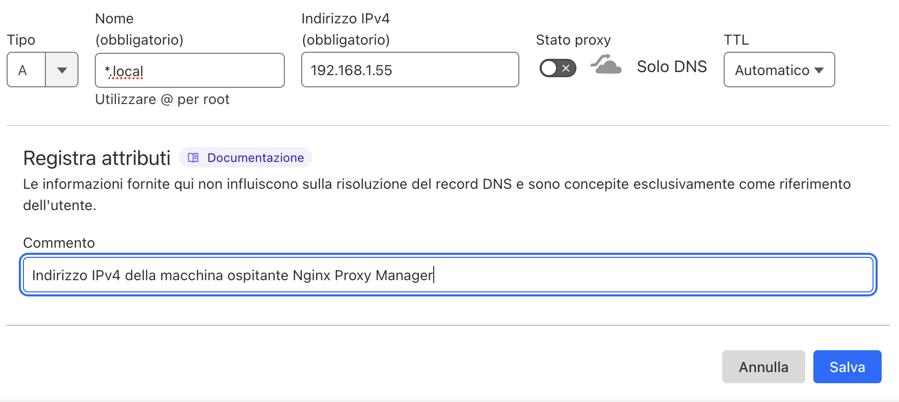
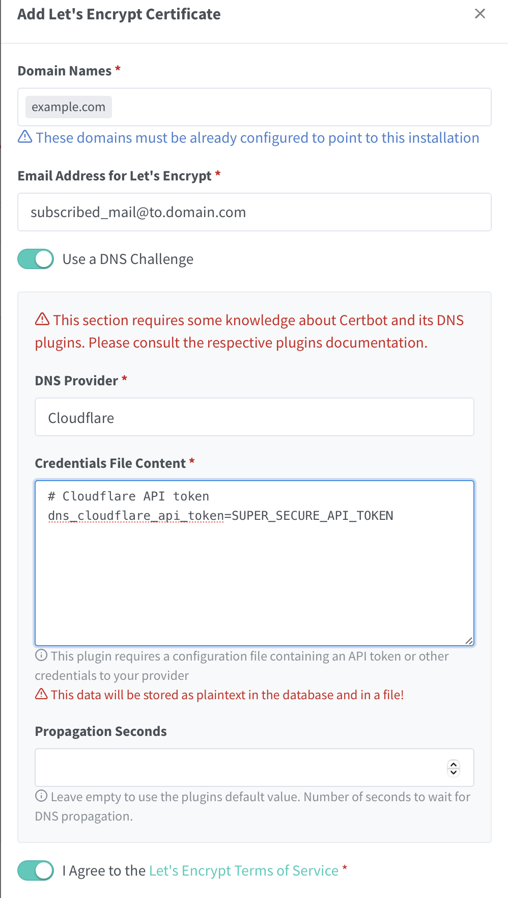

HomeLab #
Ho un HomeLab con delle funzionalità molto basiche, come ad esempio:
- HomeAssistant
- Paperless
- Trilium Notes
A questi servizi ho sempre effettuato l’accesso tramite Cloudflare Tunnel e non mi sono mai trovato male nel suo utilizzo, però mi ha sempre dato fastidio il dover pubblicare al mondo esterno tutti i miei servizi e renderlo accessibile a chiunque.
Quindi con il tempo ho cercato di valutare l’idea di utilizzare una VPN per poter utilizzare solo io, e le persone a concedo l’accesso, la possibilità di utilizzarli. Questa decisione viene con dei drawback, per esempio non poter condividere tramite dei link i documenti presenti in paperless o non avere tutte le funzionalità di “away from zone” di HomeAssistant, ma nulla che una soluzione ibrida non possa mitigare.
Per dare un attimo di contesto sulla struttura del mio HomeLab, ho un MiniPc su cui ho installato Proxmox. All’interno del quale è presente un container LCX per il Tunnel Cloudflare, che fino a oggi si è occupato (insieme al pannello di configurazione sulla dashboard Cloudflare) di svolgere funzioni di Reverse Proxy per servizi che volevo rendere disponibili al di fuori della rete.
Sottoscrizione Tailscale #
Informandomi su SubReddit e, in generale su Youtube (santo youtube), sono incappato in diverse persone che utilizzano Tailscale, un provider VPN con un ottimo piano gratuito per hobbisti basato su WireGuard. A questo punto ho creato un account, collegato il mio pc e il telefono per la prima configurazione e ho iniziato a progettare quello che sarebbe necessario configurare da qua in poi.
Nginx Proxy Manager #
Ho deciso di utilizzare un nuovo container LCX di Nginx Proxy Manager per svolgere le funzioni di Reverse Proxy. Una volta terminata l’installazione mi è bastato configurare il mio certificato SSL alla voce “SSL Certificates” utilizzando Cloudflare come provider.
Cloudflare #
Per poterlo inserire come provider per Let’s Encrypt è necessario generare un token dalla dashboard di Cloudflare, andando alla voce Gestisci Account>Token API, da qui basterà creare un nuovo token con il permesso “Edit DNS Zone” e salviamolo da parte per dopo. 
Inoltre, una volta che siamo qua sopra, sarà necessario andare al pannello del dominio e alla voce DNS, dove bisognerà aggiungere una nuova voce configurata ad hoc per la rete locale.
Configurazione Nginx #
Dopo essere tornati su Nginx possiamo terminare la configurazione del certificato SSL ed inserire il nostro primo host da raggiungere.
Basterà andare alla voce “Add SSL Certificate” e selezionare Let’s Encrypt. 
A questo punto inserire il proprio dominio, spuntare la voce “Use DNS Challenge” e andare a configurarlo in base al proprio provider, in questo caso Cloduflare.
Ultima configurazione da fare su nginx, per essere certi del suo funzionamento in futuro, è quella di andare a registrare un nuovo host.
Lo si può fare direttamente alla voce “Hosts > Proxy Hosts” e configurare il nuovo proxy.
Una volta configurato il nuovo proxy provate a collegarvi direttamente con il nuovo URL inserito e verificate di riuscire a raggiungere il vostro servizio.
Per qualsiasi altro dubbio su come configurare Nginx includo un video di Wolfgang che si occupa molto bene di spiegare le basi e come metterlo in funzione utilizzando DuckDNS.
Configurazione Tailscale #
Con tailscale ho avuto qualche difficoltà nel poter accedere alla mia rete locale, perché ero convinto per qualche motivo bastasse configurare un host per avere, nel caso di nginx, subito accesso alla rete circostante, purtroppo ho imparato a mie spese che non è questo il caso, ma partiamo per gradi.
Prima di tutto bisogna installare l’add-on di tailscale su di un container lcx, nel mio caso ho deciso di farlo nello stesso di Nginx, per facilità di utilizzo, ma potete crearne uno ad hoc solo per l’occasione.
Una volta fatto questo basta continuare a seguire la documentazione per averlo funzionante come se fosse un semplice nodo in più nella rete di Tailscale. Ma non è quello che vogliamo, vogliamo che questo nodo ci faccia da “ponte” rendendo disponibile una subnet per il resto dei dispositivi connessi alla VPN.
Per renderlo un ponte con il resto della rete bisogna eseguire un paio di azioni, lascio qui i link:
Per spiegare passo passo ciò che ho fatto:
- Abilitare Ip-Forwarding
- Pubblicare le subnet da me interessate su tailscale
- Abilitare queste subnet dal pannello di controllo di tailscale
- Configurare il client di tailscale per permettere le connessioni verso altri nodi della rete locale
- Segnalato il client tailscale come “exit-node”
In pratica queste due pagine della wiki mi hanno permesso di terminare esattamente la configurazione come la desideravo io, cioé accesso da remoto alla mia rete domestica, come se non avessi mai lasciato casa.
Configurazione finale #
Come detto in precedenza, ho alcuni servizi che non voglio che siano MAI accessibili dal mondo esterno direttamente, come ad esempio Nginx, ma altri che per poter funzionare correttamente necessitano di avere un tunnel correttamente configurato, prendi HomeAssistant.
Ho deciso quindi di applicare una regola ibrida per i miei bisogni, lasciando alcuni container protetti dalla VPN ed altri accessibili via tunnel Cloudflare.
Per fare alcuni esempi:
- VPN
- Nginx
- Vikunja
- Trilium
- Tunnel
- HomeAssistant
- Paperless
Conclusione #
Penso che si sia trattato di un ottimo esperimento per imparare ad utilizzare Tailscale e sicuramente continuerò ad utilizzarlo (ho già in mente alcune cose con n8n), penso inoltre che dovrebbe essere la scelta di default per molte soluzioni quando si decide di hostare dei propri servizi in casa.